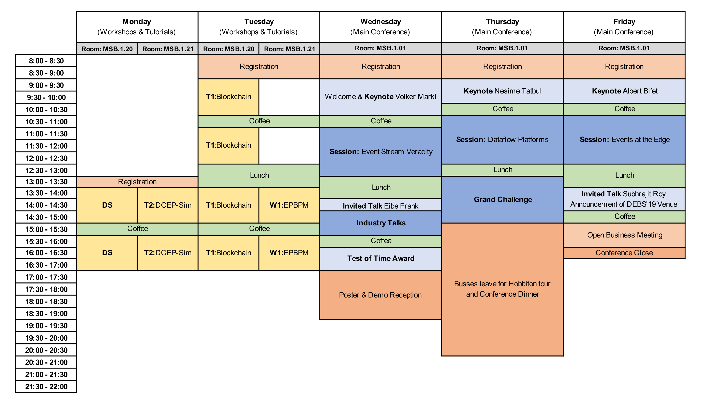

Full Program at a Glance

Presentations are to be 30 minutes per presenter.
This includes 22 minutes for your presentation and 8 minutes for QnA and presenter change over.
Download the proceedings:
Visit https://dl.acm.org/citation.cfm?id=3210284 for the DEBS2018 proceedings
Full Program Detail
Monday — 25th June
1300-1330 — Registration — Management Studies Building First Floor Foyer
1330-1700 — Doctoral Symposium - MSB.1.20
13:30 - 14:15 Dominik Meissner - Towards Time Travel in Distributed Event-sourced Systems
14:15 - 15:00 Alejandro Santos - Buffering Strategies for Large-Scale Data-Acquisition Systems
15:30 - 16:15 Manisha Luthra - Adapting to Dynamic User Environments in Complex Event Processing System using Transitions
16:15 - 17:00 Discussion panel (Vinay Setty, Roman Vitenberg, Hans-Arno Jacobsen)
1330-1700 — Tutorial: DCEP-Sim: An Open Simulation Framework for Distributed CEP - MSB.1.21
Tuesday — 26th June
0800-0900 — Registration — Management Studies Building First Floor Foyer
0900-1700 — Tutorial: Deconstructing Blockchains: Concepts, Systems, and Insights — MSB.1.20
9-10:30 Blockchains basics: Bitcoin, Proof-of-Work, Byzantine consensus
11-12:30 Advanced platforms: Ethereum, Hyperledger
1:30-3:00 Blockchain insights and research directions
3:30-5:00 Hands-on walkthrough: smarts contract development, system deployment
1330-1700 — Second International "Events Meet Processes" Workshop — MSB.1.21
Wednesday — 27th June
0800-0900 — Registration — Management Studies Building First Floor Foyer
0900-1030 — Welcome & Keynote Volker Markl — MSB.1.01
Volker Markl. Mosaics in Big Data: Stratosphere, Flink and Beyond
1100-1300 — Session: Event Stream Veracity — MSB.1.01
Session chair: Kaiwen Zhang
Muhammad Bilal, Hassan Alsibyani and Marco Canini. Mitigating Network Side Channel Leakage for Stream Processing Systems in Trusted Execution Environments
Javier Munster and Hans-Arno Jacobsen. Secret Sharing in Pub/Sub Using Intel SGX
Saravana Murthy Palanisamy, Frank Dürr, Muhammad Adnan Tariq and Kurt Rothermel. Preserving Privacy and Quality of Service in Complex Event Processing through Event Reordering
Nicolo Rivetti, Nikos Zacheilas, Avigdor Gal and Vana Kalogeraki. Probabilistic Management of Events' Late Arrival
1400-1430 — Invited Talk Eibe Frank — MSB.1.01
Eibe Frank. WEKA: Teaching an Old Bird New Tricks
1430-1530 — Industry Papers Session — MSB.1.01
Marco Balduini, Sivam Pasupathipillai and Emanuele Della Valle. Cost-Aware Streaming Data Analysis: Distributed vs Single-Thread
Joris van Rooij, Vincenzo Gulisano and Marina Papatriantafilou. LoCoVolt: Distributed Detection of Broken Meters in Smart Grids through Stream Processing
1600-1700 — Test of Time Award — MSB.1.01
Session Chair: Roman Vitenberg
1700-1900 — Posters & Demos Welcome Reception
Thursday — 28th June
0900-1000 — Keynote Nesime Tatbul — MSB.1.01
Nesime Tatbul. New Challenges and Opportunities in Stream Processing: Transactions, Predictive Analytics, and Beyond
1030-1230 — Session: Dataflow Platforms — MSB.1.01
Session chair: Boris Koldehofe
Chen Chen, Yoav Tock and Sarunas Girdzijauskas. BeaConvey: System Design of Overlay and Routing for Topic-based Publish/Subscribe on Small-World Networks
Dominik Meißner, Benjamin Erb, Frank Kargl and Matthias Tichy. retro-λ: An Event-sourced Platform for Serverless Applications with Retroactive Computing Support
Daniel Ritter, Fredrik Nordvall Forsberg, Stefanie Rinderle-Ma and Norman May. Optimization Strategies for Integration Pattern Compositions
Alejandro Santos, Pedro Javier García, Holger Fröning and Wainer Vandelli. Buffer Provisioning for Large-Scale Data-Acquisition Systems
1300-1500 — Session: Grand Challenge — MSB.1.01
1500-2100 — Conference Dinner: Busses to Hobbiton departure noted on conference map at 1500
Friday — 29th June
0900-1000 — Keynote Albert Bifet — MSB.1.01
Albert Bifet. IoT Massive Online Analytics
1030-1230 — Session: Events at the Edge — MSB.1.01
Session Chair: Avigdor Gal
Pablo Graubner, Artur Sterz, Christoph Thelen, Michael Körber, Guido Salvaneschi, Mira Mezini, Bernhard Seeger and Bernd Freisleben. Multimodal Complex Event Processing on Mobile Devices
Zhuangdi Xu, Harshit Gupta and Umakishore Ramachandran. STTR: A System for Tracking All Vehicles All the Time At the Edge of the Network
Manisha Luthra, Boris Koldehofe, Pascal Weisenburger, Guido Salvaneschi and Raheel Arif. TCEP: Adapting to Dynamic User Environments by Enabling Transitions between Operator Placement Mechanisms
Harshit Gupta and Umakishore Ramachandran. FogStore: A Geo-Distributed Key-Value Store Guaranteeing Low Latency for Strongly Consistent Access
1330-1430 — Invited Talk Subhrajit Roy — MSB.1.01
Subhrajit Roy. Epileptic Seizure Prediction using Big Data and Deep Learning: Toward a Mobile System
1430-1500 — Announcement of DEBS2019 — MSB.1.01